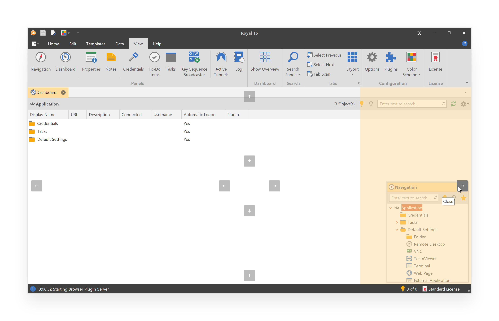
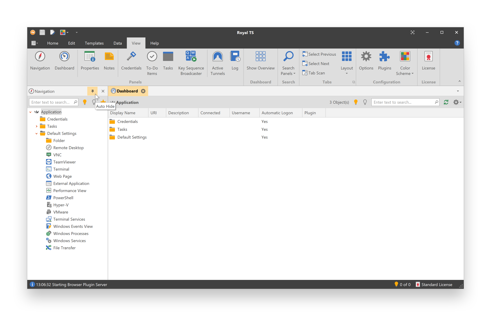
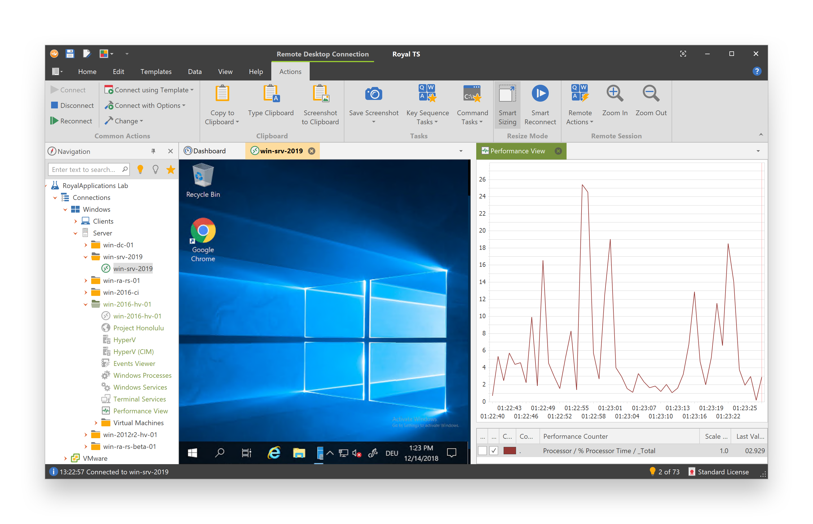
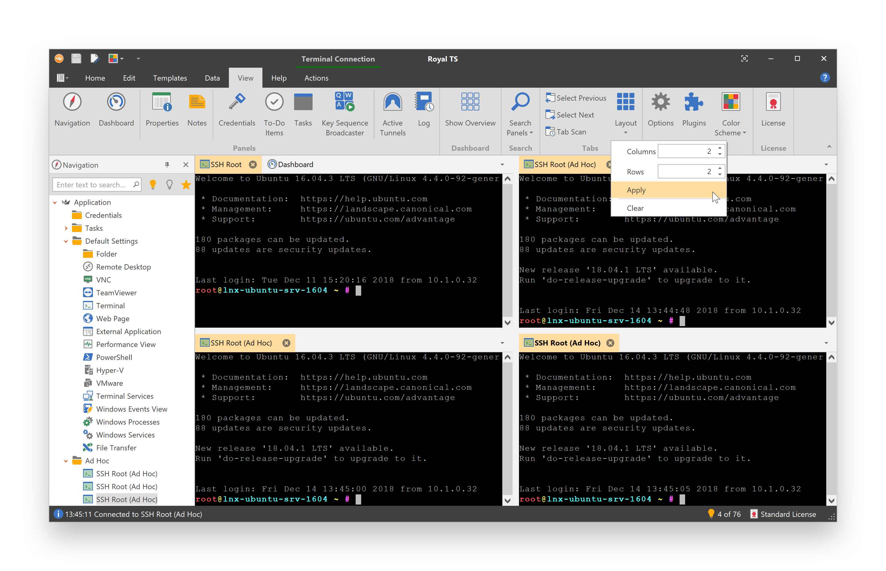
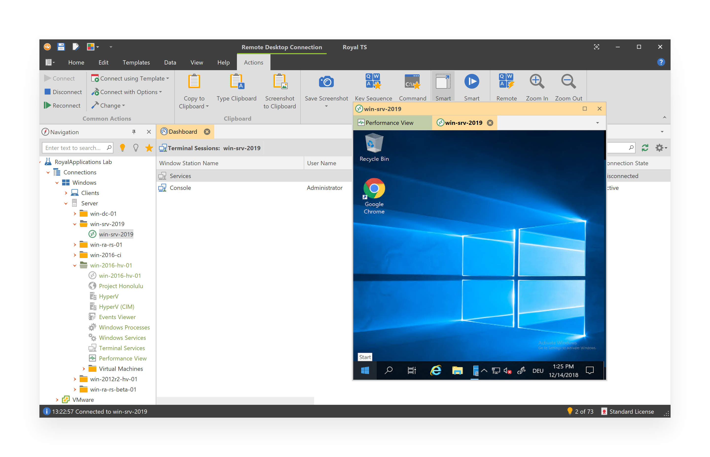
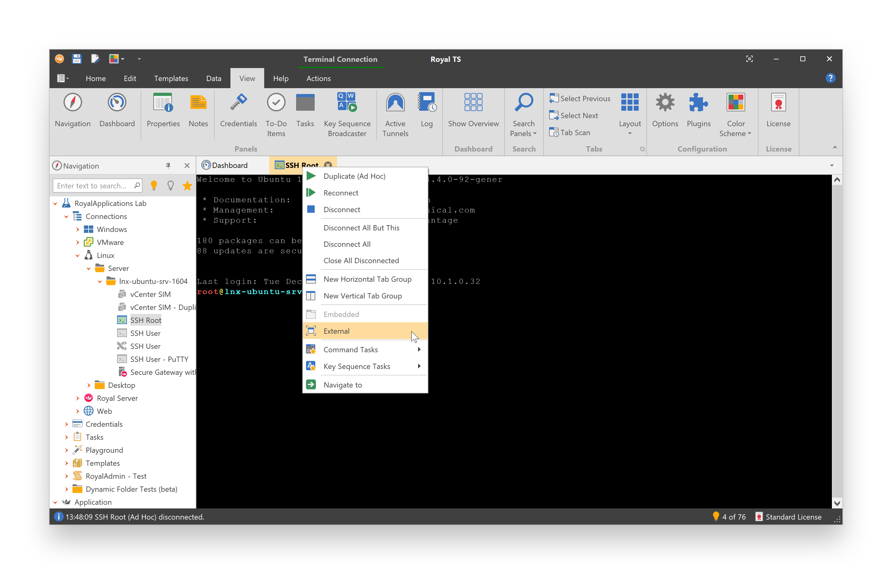

Panels and Tabs
Royal TS features an advanced dock panel user interface, very similar to Visual Studio, allowing you to adjust the navigation and viewing workspace in many ways. Docked panels and floating windows can be arranged by dragging or by using the commands after right-clicking the title bar of the panels and floating windows. Docked panels can be minimized with the Auto Hide feature. Most dock panels can also be tabbed to the tab bar by just dragging them to the center of the guide diamond.
Panels
Floating Panels and Tabs
Any panel or tab can be un-docked and moved anywhere on the desktop.
- To position a panel outside the main window, click and drag the panel's title bar to the location you want.
- To return the floating window to its most recent docked location, double-click on the title bar of the window while holding the CTRL key.
Dock Panels
By default, the Navigation panel is docked to the left edge of the main window and the Dashboard panel is tabbed to the tab bar. Other panels are available through the ribbon, on the View tab. Panels can be docked to one side of the main window. A docking guide appears when you drag a panel to another location. This guide helps you to re-dock the panel on one of the four sides of the main window.

Auto Hide
All dock-able panels can be hidden automatically (Auto Hide). Panels set to auto hide slide out of the way when you use a different panel. When a panel is auto-hidden, its name and icon are displayed as a tab at the edge of the main window. To use the panel again, move the pointer over the tab (or click on it) so that it slides back into view.

- To turn on Auto Hide, click the pushpin icon on the panels title bar or right-click the panels title bar and click Auto Hide.
- To turn off Auto Hide, click the pushpin icon on the panels title bar or right-click the panels title bar and click Dock.
Note
Panels that have Auto Hide enabled may temporarily slide into view when the panel has focus. To hide the panel again, select an item outside of the current panel. When the panel loses focus, it slides back out of view.
Available Panels
| Icon | Panel | Description |
|---|---|---|
 |
Navigation | Displays folders and objects from the Application document and all opened documents. |
 |
Dashboard | Displays various dashboards depending on the selection in the Navigation panel. |
 |
Properties | Displays the configuration in a property grid for the selected object. |
 |
Notes | Displays the notes you may have stored for the selected object. |
 |
Credentials | Displays a filtered view of all your credentials from the Application document and all opened documents. |
 |
To-Do Items | Displays a filtered view of all your To-Do Items from the Application document and all opened documents. |
 |
Tasks | Displays a filtered view of all your tasks from the Application document and all opened documents. |
 |
Key Sequence Broadcaster | Displays a panel to broadcast key sequences to multiple connections. |
 |
Active Tunnels | Displays all Secure Gateway tunnels which are currently open and in use. |
 |
Log | Displays the internal log for troubleshooting and usage statistics. |
Tabs
By default, the Dashboard panel is tabbed to the tab bar. Each connected session is represented by a tab in the tab bar. Connection tabs cannot be docked like dock panels. You can drag connection tabs to rearrange them in the tab bar and can also be dragged out to create floating windows from connection tabs.
Tab Groups
If you want to view more than one connection at a time, you can split tabs into tab groups:

Right-click on the connection tab and click New Vertical Tab Group to tile vertically or New Horizontal Tab Group to tile horizontally. You can use the tab's context menu or drag and drop to move tabs between tab groups.
Tip
You can click and drag the splitter between tab groups to resize each group. Double-clicking the splitter will restore the original splitter position.
Layouts
If you want to view multiple connections in a grid, you can use the Layout command on the View ribbon tab:

Moving Tabs to an External Window
Royal TS supports two different modes for external windows:
External Tab Hosting Window
Click and drag the tab out of the tab bar to create an external tab hosting window. The external tab hosting window can also receive other tabs from other windows and allows you to group multiple tabs in one external window.

External Connection Window
On the Actions tab, in the Common Actions group, click the Change button and select External to move the connection to an external window. You can also right-click on the connection tab and click External:
